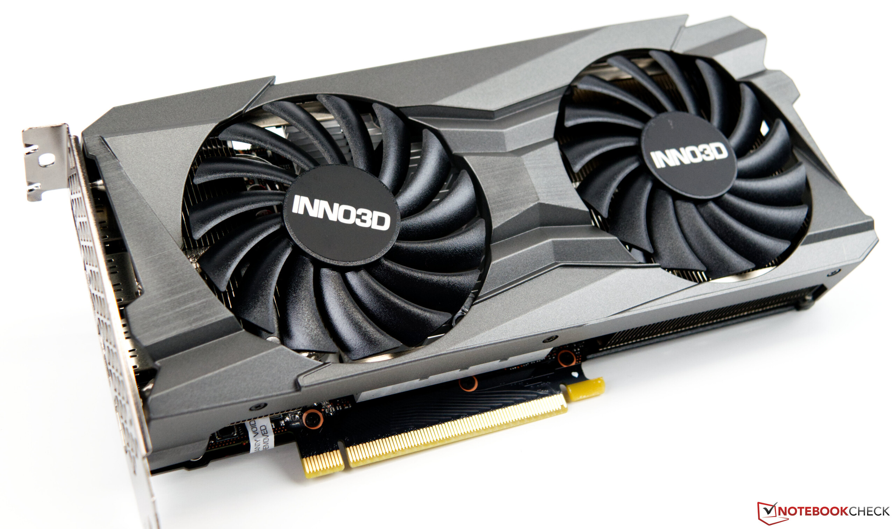
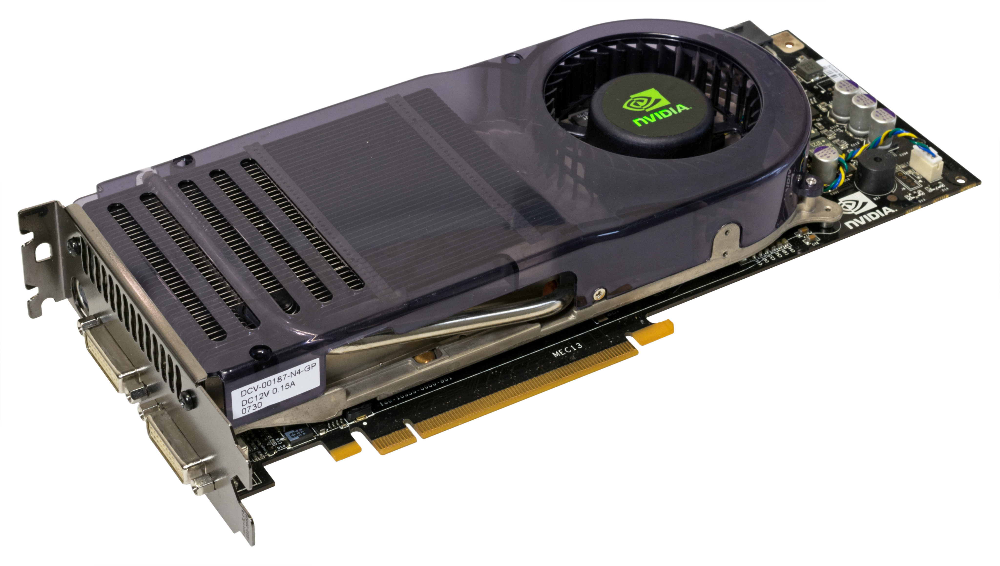
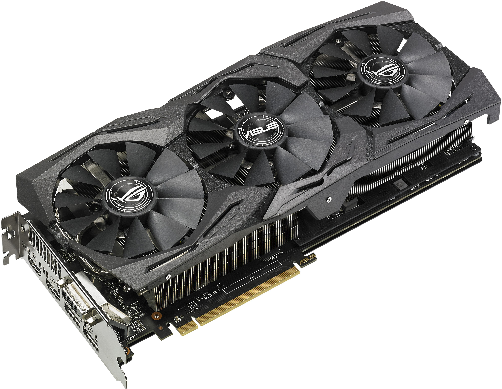
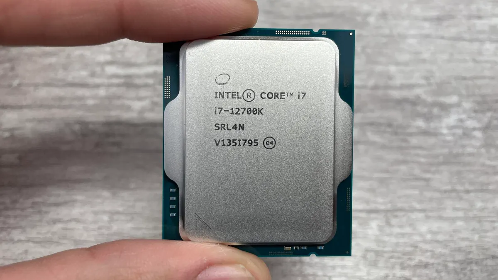
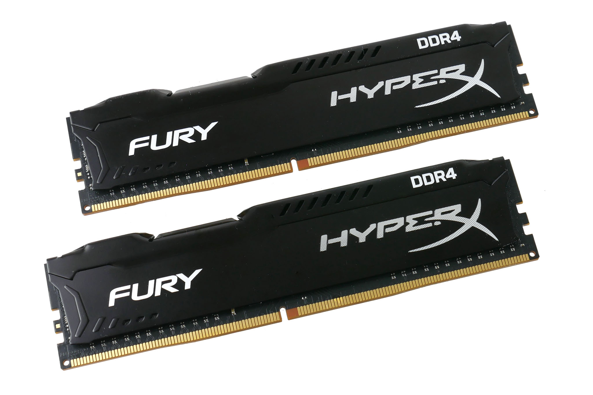
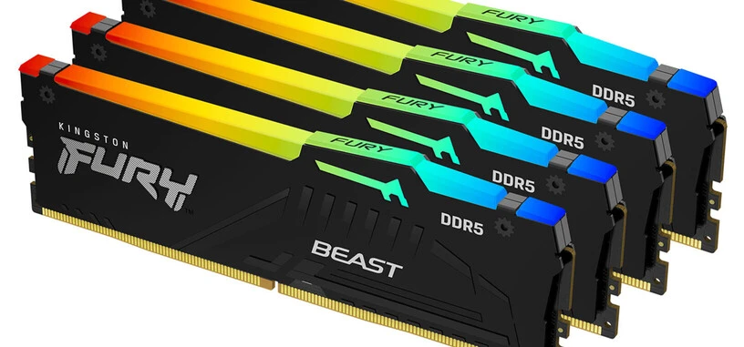
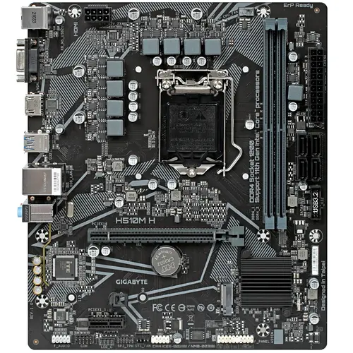
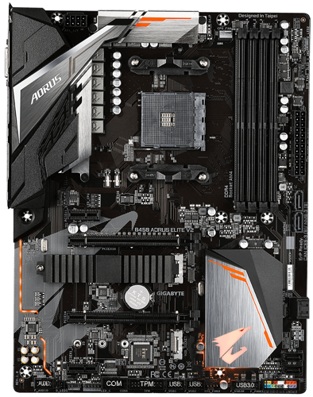
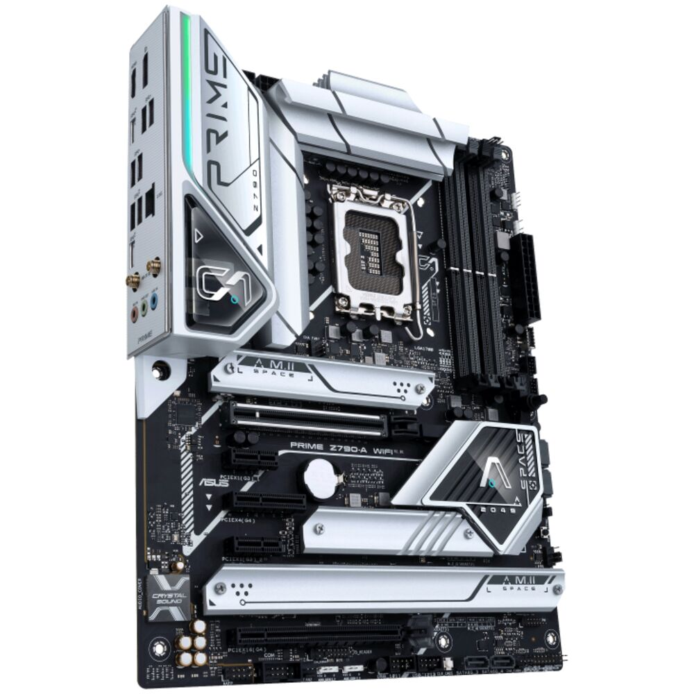

Здесь всё про комплектуещие компьютера
Видеокарта
Видеокарта (также называемая видеокартой, дисплейной картой, графическим адаптером, vga-картой/VGA, видеоадаптером или дисплейным адаптером) - это карта расширения, которая генерирует поток выходных изображений на устройство отображения (например, компьютерный монитор). Часто они рекламируются как дискретные или выделенные видеокарты, подчеркивая различие между ними и интегрированной графикой.
Видеокарта Inno3D GeForce RTX 4060 TWIN X2 создана для поклонников компьютерных игр. Графический процессор серии GeForce RTX 40 на архитектуре Ada Lovelace отличается высокой скоростью и энергоэффективностью. Технология трассировки лучей обеспечивает глубину теней и повышение реалистичности изображения, а также ускоренную реакцию геймера на происходящее в виртуальном мире. Видеокарта оснащена 8 гигабайтами Видеопамяти версии GDDR6. Так что это лучшая видеокарта за свои деньги 37 999 ₽.
Ссылка на полные характиристики название видеокарты: NVIDIA GeForce 8800 GTX, объем видеопамяти: меньше 2 ГБ, разработчик видеокарты: NVIDIA, линейка: GeForce, тип памяти: GDDR3, разрядность шины памяти: 384 бит
Больше информации и характиристики название видеокарты: NVIDIA GeForce GTX 1080 Ti, объем видеопамяти: 11 ГБ, разработчик видеокарты: NVIDIA, линейка: GeForce, тип памяти: GDDR5X, разрядность шины памяти: 352 бит, игровое, Версия PCI Express: 3.0, Количество выходов HDMI: 2, Выход DisplayPort
Ссылка на видеокарту и полные её характиристики Процессоры
Процессор — это основной вычислительный элемент и «мозг» компьютера, от которого во многом зависит скорость его работы и производительность. Раньше при сборке нового компьютера процессор выбирали первым, а уже потом остальные компоненты, чтобы технические характеристики оборудования совпали. В последнее время процессор чаще берут уже после материнской платы — с заделом на последующий апгрейд.
Процессор AMD Ryzen 9 7900X – модель с впечатляющим вычислительным потенциалом, обеспеченным 12-ядерной конфигурацией и работой в частотном диапазоне 4.7-5.6 ГГц. Для подключения чипсета к материнской плате используется популярный сокет AM5. Созданная на базе архитектуры AMD Raphael модель использует 5-нанометровый техпроцесс, за счет которого обладает высокой производительностью и сниженным энергопотреблением. Объем кэша второго и третьего уровней достигает 12 МБ и 64 МБ соответственно, благодаря чему в нем можно хранить все необходимые для работы системы данные.
Процессор AMD Ryzen 9 7900X предусматривает свободный множитель, открывающий дополнительные возможности для повышения вычислительной мощи компьютера. С его помощью можно вручную изменить тактовую частоту чипсета, при этом оставив неизменной частоту системной шины. Бесперебойную работу в многозадачном режиме обеспечивает поддержка до 128 ГБ оперативной памяти DDR5.
описание и характиристики
Процессор Intel Core i7-12700K OEM создан для того, чтобы обескураживать своей производительностью. Он может стать основой мощной игровой системы. Для этого у него есть 12 ядер, из которых 8 являются производительными, а 4 – высокоэффективными. Устройство базируется на архитектуре Intel Alder Lake. Частота его в «обычном режиме составляет 3.6 ГГц, а в форсированном достигает 5 ГГц. Интегрированное графическое ядро Intel UHD Graphics 770 дополняет конфигурацию Intel Core i7-12700K OEM. Это значит, что устройство может работать с медиаконтентом или 3D-приложениях даже без видеокарты.
полные характиристики Оперативная память
Оперативная память, или ОЗУ, — это специальный тип памяти в электронных устройствах, предназначенный для быстрой обработки данных с помощью процессора. Физически она чаще всего представляет собой электронную плату для хранения информации, подключающуюся к материнской плате компьютера, или набор микросхем, подсоединенный к чипсету мобильного устройства. «ОЗУ» расшифровывается как «оперативное записывающее устройство».
Соответствующая типу DDR4 16-гигабайтная оперативная память Kingston HyperX FURY Black [HX432C16FB3K2/16] может с успехом эксплуатироваться в составе игровой системы очень высокого класса. Вы сможете использовать любые игры, предъявляющие высокий уровень требований к производительности памяти. Скоростные показатели устройства говорят сами за себя: тактовая частота памяти равна 3200 МГц, а пропускная способность – 25600 МБ/с. Память характеризуется таймингами 16-18-18-32. Поддержка Intel XMP позволяет реализовать разгонный потенциал устройства.
Память Kingston HyperX FURY Black [HX432C16FB3K2/16] – комплект, который состоит из 2 модулей по 8 ГБ. Конструкцией модулей предусмотрены радиаторы. Высокая эффективность охлаждения крайне важна для игровой памяти. Для питания памяти используется повышенное (по сравнению с типовым показателем для DDR4) напряжение питания – 1.35 В. На радиаторах размещен узнаваемый логотип производственной серии. Память украсит ваш компьютер.
полные характиристики Оперативная память Kingston FURY Beast Black RGB стандарта DDR5 привлекает внимание геймеров стильным оформлением и позволяет осуществлять разгон игрового ПК. Быстродействие в играх с высокими графическими настройками, во время прямых трансляций с разрешением 4K+, при создании контента и 3D-рендеринге достигается благодаря двум модулям объемом по 32 ГБ с частотой в пределах 5600 МГц. Профили Intel XMP 3.0 обеспечивают быстрый и стабильный разгон.
Алюминиевый радиатор стабильно охлаждает чипы памяти. Яркая подсветка RGB предоставляет возможность настройки с помощью ПО Kingston FURY CTRL и поддерживает синхронизацию Infrared Sync. Функция определения и исправления ошибок ODECC помогает сохранять целостность данных. На плате расположена микросхема управления питанием (PMIC), которая регулирует мощность и гарантирует тем самым стабильность работы Kingston FURY Beast Black RGB.
полные характиристики Материнские платы
Материнская плата — связывает все комплектующие компьютера между собой и питает их. Она выполняет много процессов и объединяет всю систему.
Материнская плата GIGABYTE H510M H станет надежным решением для сборки офисной рабочей станции. Она выполнена в форм-факторе Micro-ATX и содержит в своей основе чипсет Intel H510 с процессорным разъемом LGA 1200. В оснащение платы входят 2 слота под размещение до 64 ГБ оперативной памяти, 4 разъема SATAIII и 1 разъем M.2 под установку накопителей, по одному слоту расширения PCI-E x16 и PCI-E x1 для графических адаптеров. Сетевой адаптер Realtek RTL8118AS с пропускной способностью 1000 Мбит/с обеспечивает стабильную связь с Интернет. Для подключения внешних устройств предусмотрены востребованные порты и разъемы. Тщательное тестирование и надежные компоненты гарантируют высокий уровень надежности материнской платы GIGABYTE H510M H.
полные характиристики Материнская плата GIGABYTE B450 AORUS ELITE V2 станет отличным выбором для создания производительной игровой системы или рабочей станции. Данная модель соответствует типоразмеру Standard-ATX, благодаря чему отличается широкими возможностями конфигурации. В ее основе используется чипсет AMD B450 и сокет AM4, что позволяет задействовать широкий модельный ряд процессоров AMD. Также данная платформа поддерживает установку дискретных видеокарт — для них предусмотрено 2 слота PCI-E x16 и поддержка технологии CrossFire X для корректной работы. Максимальный объем ОЗУ может достигать 128 ГБ типа DDR4 с частотой до 3600 МГц. Для установки предусмотрено 4 DIMM-слота. Файловое хранилище может быть представлено 6 дисками SATA, а также 2 накопителями типа M.2.
Материнская плата GIGABYTE B450 AORUS ELITE V2 изготовлена с применением высококачественных материалов, благодаря чему модель отличается надежностью и стильным внешним видом. Встроенная подсветка элементов платы придаст вашей сборке яркий и необычный вид. Сетевые возможности представлены производительным модулем Realtek RTL8118AS. Для подключения периферии на корпусе предусмотрено множество портов, среди которых — DVI-D и HDMI. Также материнская плата может обеспечить качественное воспроизведение аудио за счет встроенного модуля Realtek HD Audio.
полные характиристики Материнская плата ASUS PRIME Z690-A предлагает пользователям мощные характеристики для установки высокопроизводительных комплектующих и подключения внешних устройств. Основой данной модели является чипсет Z690 от Intel с поддержкой процессора 12-го поколения. Плата оснащена 4 слотами под установку модулей памяти ОЗУ DDR5, слотами PCI версии 5.0 с возможностью установки нескольких видеокарт, 4 разъемами M.2 и 4 портами SATA. Внешне плата выделяется массивными охлаждающими элементами с комбинированием серого и белого цветов. Коммуникационные возможности ASUS PRIME Z690-A представлены сетевым контроллером 2.5 Гбит/с, а также широким рядом проводных портов и разъемов. Панель управления с кнопками и ряд технологий помогают оптимизировать работу материнской платы.
полные характиристики  ЕСЛИ ТЫ ТЫКНЕШЬ СЮДА ТО ПАПАДЁШЬ К АЛЬФЕДОВУ И ШРЕКУ))))))))))))